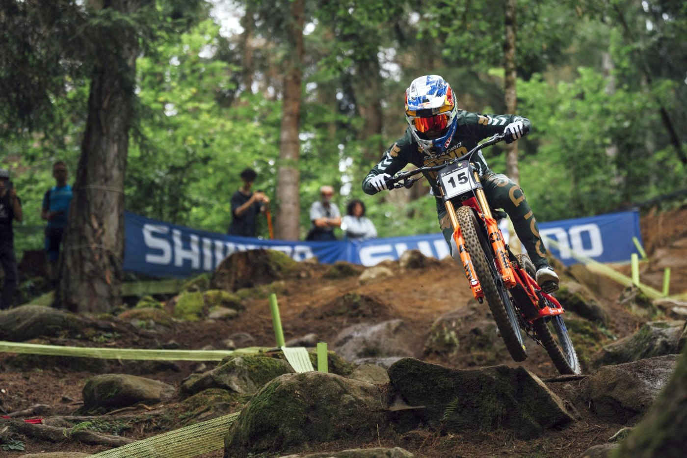

Las carreras de descenso
En las competencias de downhill, los participantes recorren un circuito de descenso y se registra el tiempo empleado para completar el recorrido.

Conoce las carreras y los desafíos del ciclismo de descenso.
En las competencias de downhill, los participantes recorren un circuito de descenso y se registra el tiempo empleado para completar el recorrido.

Puedes consultar videos de competencias y descensos de ciclismo de montaña en YouTube.